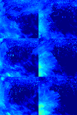
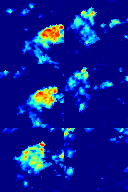
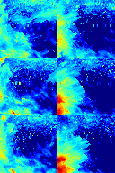

Quantitative Estimation of Rainfall Rate Intensity Based on Deep Convolutional Neural Network and Radar Reflectivity Factor

Abstract
The Convolutional Neural Network Model (CNN) has shown excellent performance in many tasks in recent years, such as the application in image recognition and classification. In this paper we propose a method based on the deep convolutional neural network model VGG and radar reflectivity factor to quantitatively estimation the rainfall rate intensity, which improves the shortcomings of the traditional method Z-R relationship with high error. We selected the shallow convolutional neural network LeNet for comparison. Then, we studied the effect of selecting different sizes of radar reflectivity factor images on the quantitative estimation of rainfall rate intensity. The results show that the depth convolutional neural network VGG and the relatively large size of radar reflectivity factor image are better than the traditional Z-R relationship and shallow convolutional neural network LeNet.


